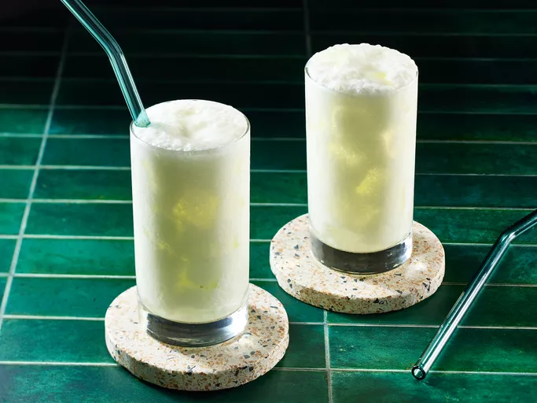

Lassi

Description
Learn what a lassi drink is with this basic recipe for the popular Indian beverage. You can adjust the amount of yogurt or water for a thicker or thinner consistency. Garnish with fresh mint if desired.
Ingridients
- Ice cubes
- plain Yogurt - 1.5 cup
- Ice water - 1.5 cups
- white sugar - 2 teaspoons
- Salt - 1 pinch
Steps
Gather all ingridients
Fill 6 glasses with ice cubes
Place yogurt, ice water, crushed ice and salt in a blender
Blend until frothy
Pour over ice cubes in the glasses to serve
Oh! you love sea food? Try this Shrimp curry
Browse more recipes